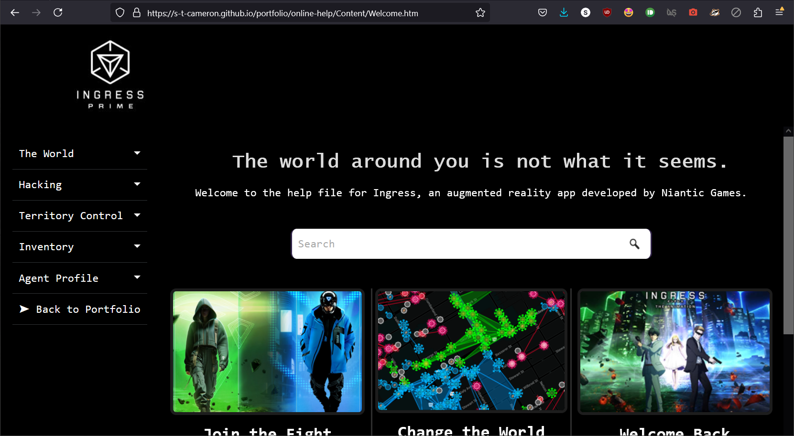

The marketing of Ingress often blurs the line between reality and fiction. Its promotional material frequently leans into intrigue around the lore. For consistency with that branding, the first impression of the site is partially "in-universe"; it plays into that sense of mystery while still delivering enough information to be helpful.
For further brand alignment, the colour pallette for the help file is based on the app itself.